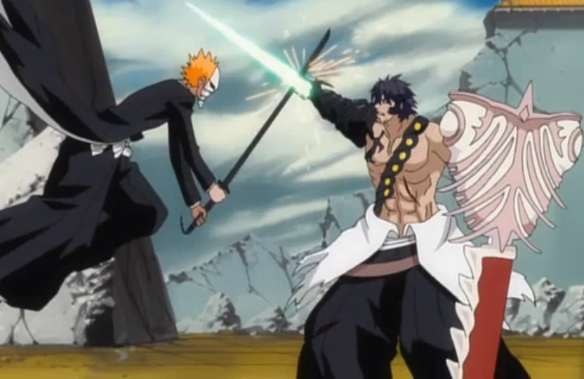

Os arcos abaixo são exclusivos do anime e não fazem parte da história original de Tite Kubo. São opcionais, mas apresentam personagens e poderes únicos.
Arco Bount
Episódios 64 – 109
Ichigo e seus amigos enfrentam os Bounts — humanos imortais criados por experimentos da Soul Society que se alimentam de almas humanas. Liderados pelo enigmático Jin Kariya, os Bounts buscam vingança invadindo a Soul Society.

Principais Eventos
- Ichigo conhece os Bounts — humanos imortais criados em experimentos secretos
- Ririn, Kurōdo e Noba aparecem como Mod-Souls criados para rastrear Bounts
- Cada Bount possui uma Doll — espírito-arma análogo à Zanpakutō
- Jin Kariya lidera os Bounts rumo à invasão da Soul Society
- Batalhas intensas dentro da Soul Society contra capitães e Bounts
- Derrota final de Kariya por Ichigo
Arco do Capitão Amagai
Episódios 168 – 189
Ichigo e seus amigos conhecem Shūsuke Amagai, o novo capitão da 3ª Divisão, enquanto uma misteriosa família nobre chamada Kasumiōji se envolve em uma conspiração dentro da Soul Society. Ao lado de Rurichiyo Kasumiōji, Ichigo descobre que o novo capitão esconde seus próprios objetivos.

Principais Eventos
- Shūsuke Amagai é apresentado como o novo capitão da 3ª Divisão
- Ichigo conhece Rurichiyo Kasumiōji, herdeira de uma família nobre da Soul Society
- Ichigo e seus amigos passam a proteger Rurichiyo de seus inimigos
- Uma conspiração envolvendo a família Kasumiōji e a Soul Society é descoberta
- Amagai revela sua verdadeira identidade e seu plano de vingança contra a Central 46
- Amagai utiliza a Bakkōtō, armas capazes de aumentar os poderes de seus usuários
- Ichigo enfrenta Amagai em um confronto final
- Amagai é derrotado e reconhece seus erros antes de morrer
Zanpakutō: A Rebelião
Episódios 230 – 265
Os espíritos das Zanpakutō ganham forma física e se rebelam contra seus portadores, liderados pelo misterioso Muramasa. Os Shinigamis precisam lutar para recuperar o vínculo com suas espadas.

Principais Eventos
- Muramasa liberta os espíritos das Zanpakutō de seus portadores
- Senbonzakura, Zabimaru e Hyōrinmaru assumem formas físicas
- Zangetsu e Hollow Ichigo aparecem como personagens independentes
- Shinigamis lutam para recuperar o vínculo com suas espadas
- Revelação do passado de Muramasa e de Kōga Kuchiki
- Derrota de Muramasa e restauração das Zanpakutō
Gotei 13 Invasão!
Episódios 317 – 342
Kagerōza Inaba cria os Reigai — cópias amplificadas dos capitães e tenentes — que tomam o controle da Soul Society. Ichigo protege a misteriosa Nozomi Kujō enquanto os Shinigamis lutam para recuperar suas posições.

Principais Eventos
- Nozomi Kujō aparece como um Mod-Soul especial em fuga
- Kagerōza Inaba cria os Reigai com poderes amplificados
- Os Reigai tomam a Soul Society, expulsando os Shinigamis reais
- Ichigo e amigos protegem Nozomi combatendo os Reigai
- Revelação: Nozomi e Inaba são fragmentos de uma mesma alma
- Sacrifício de Nozomi para destruir Inaba e restaurar a paz